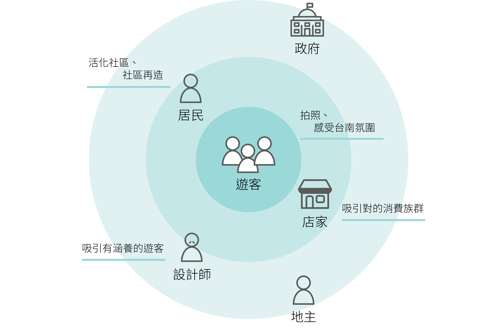
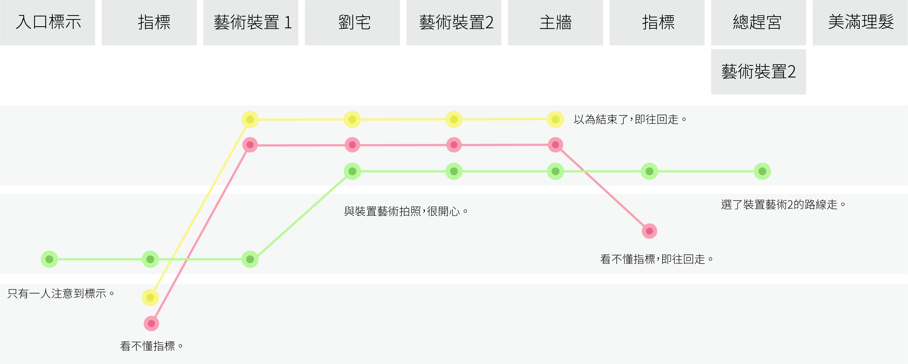

重新打造蝸牛巷的體驗。
這是一們服務設計的課，各組選定台南特定的觀光區域，進行服務設計。我們所選定的場域-蝸牛巷，位於台南中西區的巷弄空間。周圍由四條馬路所包圍，是一個熱鬧中寧靜的地方，實在地呈現台南慢生活，也因此被台灣文學作家葉石濤名為「蝸牛巷」。
UX研究員
2017.9 - 2018.1
蝸牛巷2016年底完工，目前巷弄中有些裝置藝術供遊客拍照。
在蒐集資訊的時，我們從臉書粉絲專業、部落格、Google景點評價等，試圖了解蝸牛巷在遊客們眼中的想法。透過文字雲，發現遊客最常使用的字為「巷弄」、「散步」、「拍照」、「裝置藝術」…等。仔細閱讀平台中的評論，發現會有好心的遊客在留言裡呼籲其他遊客「要保持安靜，以免打擾蝸牛巷的居民」。抓住這條線索，我們開始意識到蝸牛巷與其他觀光景點不同之處。
田野調查的過程中，我們發現蝸牛巷與其他觀光景點主要的差異源於此「藝術的場域與居民生活互相結合」。因此在設計時，必須特別留意這個模式帶來的利與弊。問卷能提供蝸牛巷的客群、遊客原本來到蝸牛巷的目的、遊客是否覺得蝸牛巷符合期望…等資訊。由於問卷是在現場給予遊客填寫，我們也抓準機會尋問客人對於蝸牛巷的看法，進一步了解遊客的態度。
觀察的中期，進入訪談的階段。我們分別訪談了代表政府角色的設計師、遊客、居民與店家，四個在蝸牛巷主要的利害關係人。印象比較深刻的是與居民互動的時候，自我角色的呈現是很重要的。如果以「訪問者」的角色出現，居民通常擔心我們為政府單位而有所防備。因此，有時候會花一個下午的時間，漫步於巷弄或在店裡喝杯咖啡，與居民和店家以閒聊的方式認識蝸牛巷。
//
經過前面資料的蒐集，我們簡單繪製出利害關係人與他們的目標。
在利害關係人的圖中，我們沒有採用將各個角色之間的關係拉出來，找出主要影響因子的方法。取而代之的是將角色的目標放入，因為在這個圖中，最主要的四個角色：遊客、居民、設計師與店家是呈現一個需要互相平衡的關係。考量蝸牛巷的發展，讓四個角色目標能夠被滿足，相互之間取得平衡與共識才是我們認為重要的要素。
目標的設立自然也有衝突的出現。設計師認為來蝸牛巷的遊客沒有認識到場域的歷史故事、葉石濤文學之美與感受台南巷弄文化等。店家則表示來到蝸牛巷的遊客多半非主要客群，無法帶動業績，還間接帶來髒亂。這些問題都代表著服務本身需要重新考量，而改良的同時注意各角色之間的平衡關係。
訪談的過程中，我們發現設計師是主導蝸牛巷發展的舵手，而他們自身也有對蝸牛巷的一套規劃。其實設計也可以採用漸進的方式，過程中同時理解服務對象的需求，而當將時間軸考量進來，一項服務就有更多的可能性。
後期我們運用了一個技巧。我們先繪製出理想的(規劃的)顧客旅程地圖，再者繪製出遊客實際產生的顧客旅程地圖，最後將兩者相比，找出失效的接觸點。
在繪製顧客旅程地圖時，我們發現由於蝸牛巷入口很多，無法讓遊客統一一個路線，這也是許多接觸點可能被遺漏的原因。因此如果要讓遊客不要錯失任何一個裝置，就要加強蝸牛巷內的標示或用其他方式輔助。然而，這樣追求清楚的指示會不會失去遊客在巷弄中漫步與迷路的體驗呢？這也是一個可以思考的問題。
//
(Continue...)
Part 2